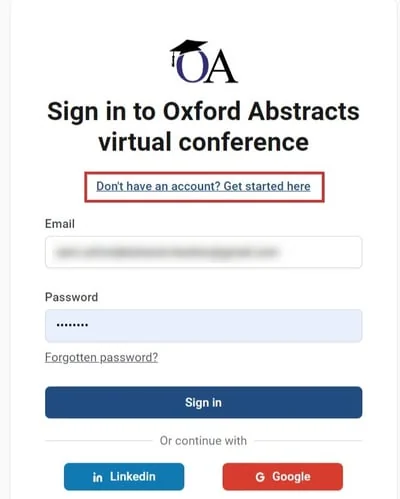
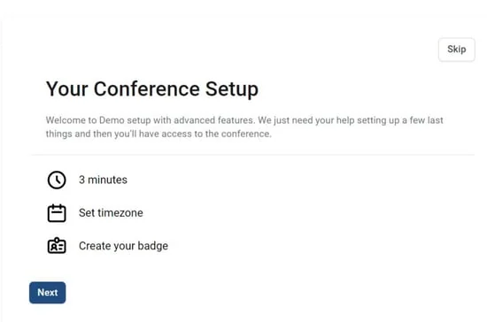
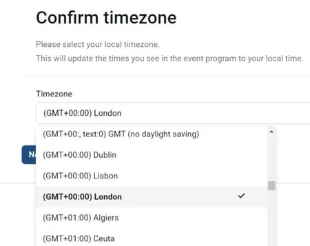
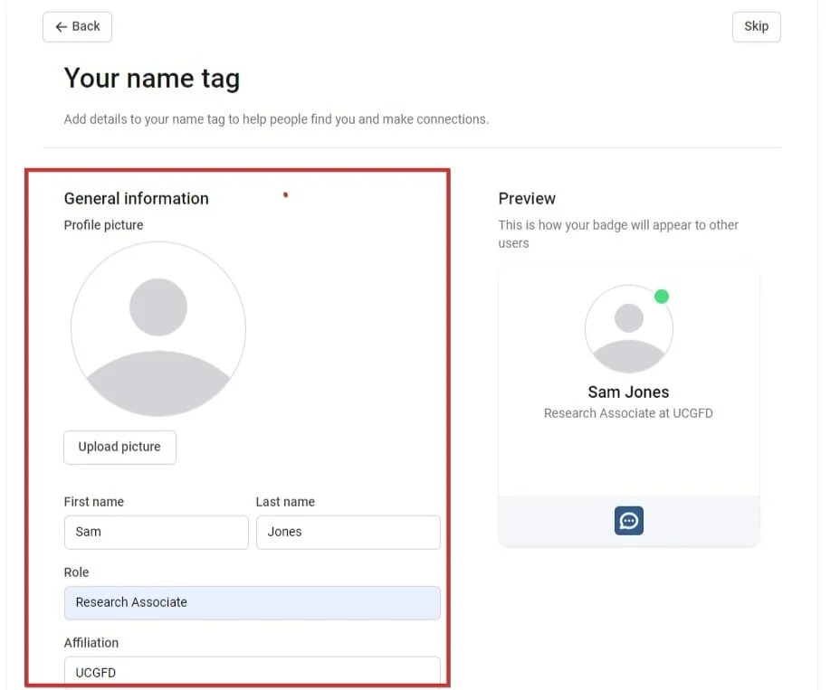
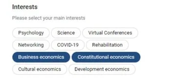
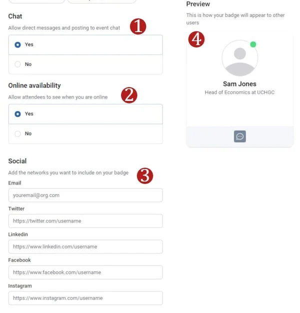
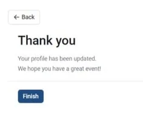

Setting up your conference program account
For conference attendeesOrganising the event?
After clicking the link to the conference platform, you will need to follow a few steps to create your profile and set up your timezone.#
If you experience any issues when logging in to program, and don't see what you would expect to see, watch the video below for guidance on how to remedy this.
Enter your Oxford Abstracts account details, or sign in using Linkedin or Google.
If you don't have an account, click the link shown below.

Once you sign in, you can set your timezone and create your badge. Click Next.
(You can also skip this step if you want, but you will not be able to use the direct chat wthout setting up your name badge.)

Select your timezone using the dropdown and click Next.

In the upper half of the next screen, you can add your name tag details.

You then have the option of adding further details to your name badge, including our academic interests (select from a list created by admin). Simply click those that apply.

You can then set up
1) Your chat permissions
2) Your online availability
3) Email and social profiles
A preview (4) of your badge will be displayed on the right hand side of the panel.

All changes are saved automatically.
Click Next when you're done.
You will receive a confirmation message.

Your name badge will then be visible to all the other attendees.
Did this page solve it?
Thanks — this helps us fix it.